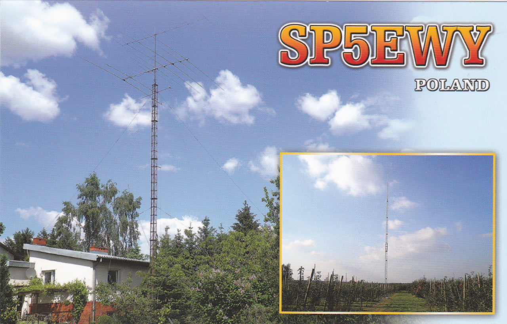

Flash ! DX
|
Who said 6M was a dead band ?
|
(注)
このReportをご覧になる方へ
[Back Issues Jan.2017]
TIME:UTC(JST-09:00)
Report from JA1RJU(PM95sq)
31.Jan.2017(15:00b)
Report from JA1RJU(PM95sq)
30.Jan.2017(15:00b)
Report from JA1RJU(PM95sq)
29.Jan.2017(15:00b)
|
◎昨年の暮れから新年に掛けての6ｍバンドは完全に“死んで”いました。
この時期の海外とのDX-QSOは期待出来ない事は知っていても、やはり毎日ノイズだけを聞いているのは辛いものがありました。
前回のサイクル最低期だった2009年のコンデションは、春のVKの初オープンは3月に入ってからでした。サイクル24はまだサイクルの最低期に向かっている時期なので、同じようなコンデションは、これからも2年ほど続くものと思われます。
幸いな事に最近の6mでは、夏場のEsシーズンの“マルチホップ”でのDX-QSOのチャンスがあり、サイクルの最低期でも“New”を狙えるDX-QSOが可能なので、昔と違って“11年の周期”の長い冬の時代を過ごさなくても良くなったのはありがたい事です。
|


Report from JA1RJU(PM95sq)
28.Jan.2017(15:00b)
Report from JA1RJU(PM95sq)
27.Jan.2017(15:00b)
Report from JA1RJU(PM95sq)
26.Jan.2017(15:00b)
Report from JA1RJU(PM95sq)
25.Jan.2017(15:00b)
Report from JA1RJU(PM95sq)
24.Jan.2017(15:00b)
Report from JA1RJU(PM95sq)
23.Jan.2017(15:00b)
Report from JA1RJU(PM95sq)
22.Jan.2017(15:00b)
Report from JA1RJU(PM95sq)
21.Jan.2017(15:00b)
Report from JA1RJU(PM95sq)
20.Jan.2017(15:00b)
Report from JA1RJU(PM95sq)
19.Jan.2017(15:00b)
Report from JA1RJU(PM95sq)
18.Jan.2017(15:00b)
Report from JA1RJU(PM95sq)
17.Jan.2017(15:00b)
Report from JA1RJU(PM95sq)
16.Jan.2017(15:00b)
Report from JA1RJU(PM95sq)
15.Jan.2017(15:00b)
Report from JA1RJU(PM95sq)
14.Jan.2017(15:00b)
Report from JA1RJU(PM95sq)
13.Jan.2017(15:00b)
|
◎2017年を迎えて早くも今週末で2週間。6mのDXコンデションは昨年の暮れから連続して”入感ゼロ”が続いている。サイクルの最低期とは言え、ここまでコンデションが落ち込んでいるのは珍しい。南半球のVK/ZLでは今が”夏場のEsシーズンで、ローカルQSOが盛んに行われている。
2月も後半になるとEsシーズンも終わりに近づき、TEPに寄る南北のパスも少しは期待出来る様になるものと思われるが、いずれにしても速急なコンデション回復にはもう少しの時間が必要かも？。
今年の日本の冬は本州の北陸、東北、北海道までの日本海側を中心に強風や大雪による大荒れの天候が続いている。
冬場のこの時期は、雪や強風によるアンテナなどの被害も多発し、”メンテナンス”も難しい時期となる。
太平洋側に突き出している関東地方では、日本列島の中央に位置する越後山脈や飛騨山脈、赤石山脈(南アルプス)系の山々に遮られ、日本海側から吹き付ける強風の影響を直接受けないので、寒気の接近でも日本海側の様な被害がほとんど受けないのは”幸運”と言える。
|
Report from JA1RJU(PM95sq)
12.Jan.2017(15:00b)
Report from JA1RJU(PM95sq)
11.Jan.2017(15:00b)
Report from JA1RJU(PM95sq)
10.Jan.2017(15:00b)
Report from JA1RJU(PM95sq)
09.Jan.2017(15:00b)
Report from JA1RJU(PM95sq)
08.Jan.2017(15:00b)
Report from JA1RJU(PM95sq)
07.Jan.2017(15:00b)
Report from JA1RJU(PM95sq)
06.Jan.2017(15:00b)
Report from JA1RJU(PM95sq)
05.Jan.2017(15:00b)
Report from JA1RJU(PM95sq)
04.Jan.2017(15:00b)
Report from JA1RJU(PM95sq)
03.Jan.2017(15:00b)
◎New Year Party 2017
Report from JA1RJU(PM95sq)
02.Jan.2017(15:00b)
◎New Year Party 2017
Report from JA1RJU(PM95sq)
01.Jan.2017(15:00b)
◎2016年末の6mのコンデションは、サイクル24の最低期に向かっている時期とは言え、全くDXからの入感も無く終わってしまった。
過去の記録ではサイクルの最低期でも、年末、年始にかけてTEPによる、短時間ながらVK/ZLのオープンがあったコンデションに比べ、今回の落ち込みの酷さは、次期「サイクル25」はピークでも”SSNは一桁”で終わりそう...との予測を暗示している様にも思われる。2017年もサイクル24の最低期に向けて更に降下するのでコンデション上昇は期待は出来ない...か？。

|